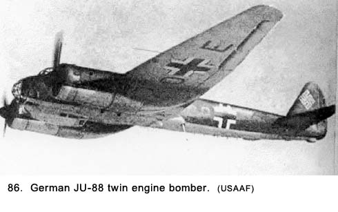

|
Table of Contents < - - - return Chapter 17 < - - - next
World War II Story by Robert F. Gallagher Chapter 16 - Differdange, Luxembourg I can sum up everything I
have learned about life in three words: It goes on. _______________________ We traveled only about thirty miles from our previous gun site but we had entered another country. Our new gun position was in Differdange, Luxembourg, a suburb of Esch-sur-Alzette, Luxembourg's second largest city, in the southwest corner of the small country. It was March 18th. We were situated in a large public park where we dug in and built up our gun pit with sand bags. The landscape was slightly hilly and we could see two of our battalion's gun emplacements some distance away. We had no idea what we were guarding, unless it was the town itself. There were no buildings nearby to billet in, so we set up our two six-man tents under some trees, away from the gun. We put our cots inside and called it home. The park setting created a tranquil feeling that felt good but not natural. A war zone did not feel like a war zone when we were surrounded by beautiful trees, expanses of green grass, and birds singing in the trees.  Some high school girls came by the pit the first day we were there and they stopped to talk with us. It made our day, and reminded us we were in a friendly country. The girls spoke English well and wanted to practice their language skills on us. They told us what it was like during the German occupation. They referred to them as the Boche, which we found out later was a common term in other occupied countries as well. It had a derogatory overtone and the girls put an emphasis that showed great contempt on the word. Spearing said, "It sounds like they're spitting when they say that word, Boche" Again, most of the time on duty at this gun position was spent scanning the sky looking for enemy planes. We were disappointed we were not seeing more action. Finally, around midnight on the second night, we heard a lone plane high overhead. Although we could not identify it because of the dark, we began tracking it. The engines were throwing out an afterglow that was easy to pick up. The word came over the phone that it was a German JU-88, a twin-engine medium bomber (See Fig. 86). We were told not to open fire on it but no reason was given. Because it was flying at such a high altitude, it appeared to be going slow. It was in view a long time, unlike the low-flying planes we saw in Woippy. The plane's engines had a very distinct sound unlike anything we had heard before. We could hear every stroke of its engines, and we thought it sounded like a couple of washing machines. It seemed to crawl across the sky, and we were unhappy we could not shoot at it. But why would a lone plane, especially such a slow-moving one, fly over enemy territory? We found out the next morning. The Germans were dropping propaganda pamphlets, and a number of them had fallen near our gun position. They were little sheets of paper about four inches by six inches that showed, by a cartoon drawing, a girl at a bar with several men in civilian clothes hanging over her. The writing in English said something to the effect of, "Why are you fighting when your girlfriends and wives are home being fought over by civilians?" and "Did you know that only one out of every four men in the Army is ever in combat?" It was all done very crudely, and we just laughed at it. The next night at about the same time, the plane, or maybe it was another one of the same model, returned, flying basically the same route. We could identify it by the unusual beat of its engines. By this time, we had nicknamed it Midnight Charlie because of its arrival time. We were instructed by phone to fire this time but to wait for the searchlights to go on. There were several crews of a searchlight battalion in the park with us. The lenses on these lights appeared to be about eight feet in diameter and we were anxious to see them light up. When the plane was directly overhead, about a dozen of these lights went on, changing night into day up where the plane was. At the same time dozens of antiaircraft guns opened up with their red lines of tracers lighting the way. Our Battalion was firing 40mm and .50 calibers shells, and a 90mm unit was also firing. Even though it appeared there was a steady stream of tracers going up from the .50 caliber machine guns, we knew that only every fifth shell was a tracer. There were four more rounds between them that could not be seen. The expenditure of ammunition for one plane was enormous. The shells from the 90s would explode at a preset altitude, leaving hundreds of large puffs of smoke dotting the sky like small clouds. The searchlights with their streams of white lights stabbing through the black night were shining off of them, making an unearthly sight. This, combined with the noise from the guns, smoke blowing from several directions, and the smell of gunpowder, combined to create an atmosphere of excitement. Then the hit came, and the object of all this attention, the ill-fated plane, turned into a ball of destruction. The plane split right in two. Debris flew in many directions, and one of the two main pieces fell straight down as the other half spiraled down. Some of the guns continued to fire at the pieces all the way to the ground. There were no parachutes. We almost felt sorry for the lone plane and its hapless crew. No one tried to take credit for the hit, because it was like shooting ducks in a rain barrel. The lights went off, and it was quiet and dark again. Our wish to see some action at this site had been answered, but, somehow, there was something missing with such an easy target. The process of going from the intense action of shooting at a plane with all of the tracers in the sky, the noise from the guns, the searchlights and the adrenaline pumping, then, back to darkness with everything being quiet, all in a few minutes, was a very weird adjustment. We were all tense, and it took about an hour for us to relax again. It had been a stimulating experience with a certain amount of beauty involved if only for its unnaturalness. The next morning, we got to go into the town of Differdange for a shower, and this time we were issued some clean underwear. There were several large truck trailers set up by a quartermaster unit. We walked into one area that was divided by canvas partitions with about ten men in each partition where we were showered with warm water for about thirty seconds. Then we soaped up all over, followed by another thirty-second rinse. It was a condensed version of a real shower, but it did the job and was greatly appreciated. It was certainly a great improvement over what we had experienced in Nancy. We were not getting ourselves very clean by washing out of steel helmets at our gun positions because there was a limited amount of water that had to suffice for drinking, cooking and bathing. There was no set limit on how much we could use individually, but the crew had to share the five water cans of five gallons each we were issued about every other day. Early on March 21, we got March Order. We loaded up and headed off to join the convoy. As the trucks were assembling, Captain Mc Kee was darting up and down the convoy in his Jeep, doing his thing. His T-5 ranked driver and dog robber (a name given to an officer's flunky, always used as a pejorative), was making sharp U-turns, going from one place to another along the line of trucks as the Captain shouted to the drivers,: "Move up! Close the gap! Move ahead of the two trucks in front of you! Did you check your tires? Where's gun section number four? Did you see Lieutenant Harrison?" He was standing in the Jeep holding on to the top of the windshield and waving his swagger stick. Our leader was in his element directing his truck-borne troops into battle with all of the fervor and importance (to him only) of General Patton directing his tanks as they swept deeper into Germany. Actually, everyone knew the job could have been done by any noncom in the unit. But at least we saw him, although the only reason we looked was in the hopes of seeing someone else had taken his place as battery commander. While the rest of us felt what we did at our gun positions was of the greatest importance while in a combat zone, Mc Kee seemed to put his emphasis on more mundane things like counting trucks. He never once showed up at out gun pit for the full time we were in Europe-an oversight we greatly appreciated-but he was always making grand appearances during convoys. Mc Kee had all the characteristics of the psychotic ship captain described in the book The Cain Mutiny. All that was lacking were the steel balls clicking in his hand; but, never one to be outdone, he had the ever-present swagger stick to flag his pontifications. Unbeknownst to us at the time, we were headed into an area that would be one of the most harrowing phases of our World War II adventure. The tranquil setting of the park we had just left did not help in the adjustment. Chapter 17 < - - - next Table of Contents < - - - return
Footnotes and Source of Photographs. Copyright, Robert F. Gallagher, 1999 - 2015, all rights reserved on all images and content.
|